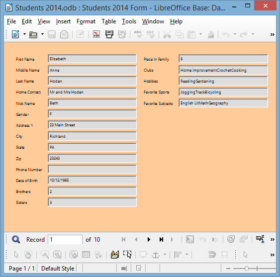
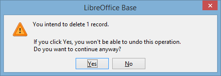
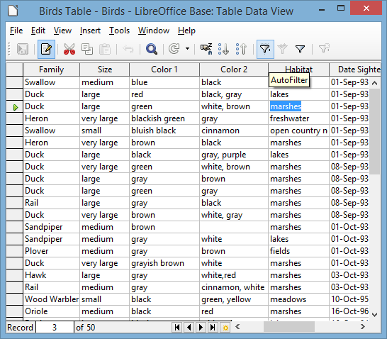
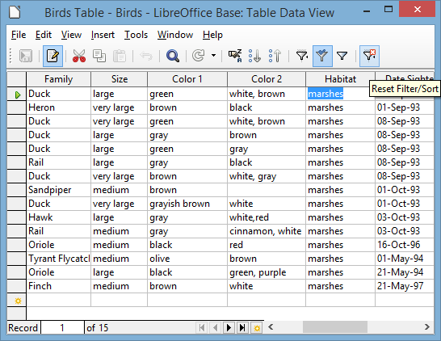
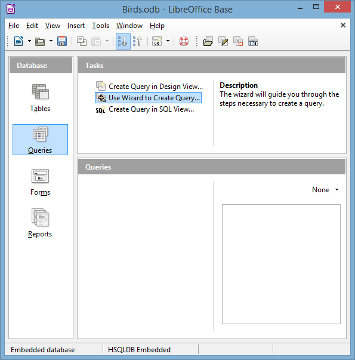
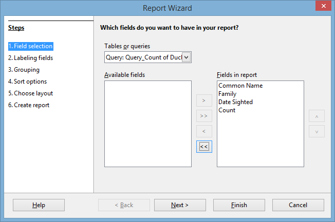
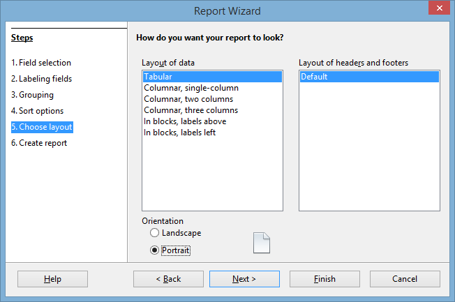
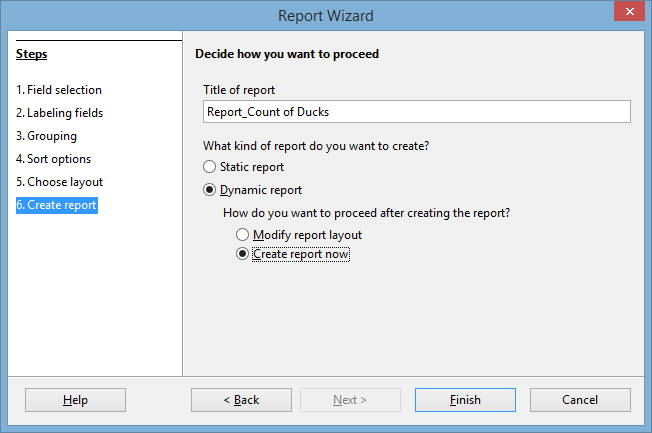

Lesson 8 More on Database Use¶
8 MORE ON DATABASE USE
Manipulating the Data in the Database
LEARNING OUTCOMES
Lesson 8, after reviewing the basics, will introduce you to the following additional features of the Base database:
• searching and querying a database
• sorting records
• creating reports
• improving the report (making changes)
• printing reports
8.1 GETTING STARTED
Setting up for the tutorial
If you completed Lesson 1 of these tutorials, you can skip the rest of this section and proceed directly to the next section (Continuing with the tutorial—next page). If you did not complete Lesson 1, then you must do this now, before proceeding with the rest of Lesson 8.
The set of Work Files for LibreOffice ideally should be stored on a Flash drive (USB drive) in three folders named Base Files, Impress Files, and Miscellaneous Files. You need to create a fourth folder for the data files that you will be creating while working your way through the tutorials. This fourth folder will be called Data Files.
Here are the steps to prepare these folders now before proceeding with this tutorial.
First, Unzip the set of Work Files for LibreOffice by double clicking on the File name on your computer (your instructor will help you with this if you are working with a class) and Extract them onto your flash drive
Double click on the Work Files for LibreOffice folder to open it
Now, inside the Work Files for LibreOffice folder you need to create a new, fourth, folder called Data Files. Here’s how you do this.
In the Work Files for LibreOffice folder, select New Folder (Fig. 8.1).

Fig. 8.1 Creating a New Folder
The system will create a new folder for you and then wait for you to give it a name of your choice (Fig. 8.1 above).
Call the new folder Data Files
During the course of these tutorials you will be storing many files in this Data Files folder.
Continuing with the tutorial
Make sure you have your Work Files for LibreOffice available on your computer, then Open LibreOffice and, from the File menu, select Open
Base will display the Open dialog box.
Navigate to your USB Drive > Work Files for LibreOffice
Base Files folder
You are going to work first with a database similar to the one you created in Lesson 6. The database, called Students 2014, has been prepared for you to use with this tutorial in order to standardize the directions that follow.
In the Base Files folder open the Students 2014 database
In the left frame of the Students 2014 Base window, click on the Forms icon, then, in the Forms section, double click to open the Students 2014 Form
You should see the Forms View of the Students 2014 database, as illustrated in Fig. 8.2.

Fig. 8.2 The Forms View of the Students 2014 database
8.2 REVIEWING THE BASICS
Let’s start with terminology.
A database is a document which contains a set of records. Each record is made up of one or more fields, and each field may or may not contain entries.
For example, a database of movie titles might have records for a few thousand movies. Each record will have fields for the movie title, the director, the producer, the star(s), and so on. A particular entry for the Movie Title field might be “Star Wars.”
Viewing the data in the database
When you first open an existing database, it is generally best to open a Forms View of the database because you can easily view the contents of an entire record on the screen, thus showing you what all the records basically contain.
In the Forms View, as you can see, the data for one complete record is shown in the Form. Notice the database navigation tools at the bottom of the Form window (Fig. 8.3).
Fig. 8.3 Navigation tools in the Base database
Look them over now to re-familiarize yourself with how they work.
Now, close the Student 2014 Form and, in the Database frame, switch to Tables, and, in the Tables section, double click on Student 2014 Table to open it
This Table view (Fig. 8.4) shows the records across the screen in rows and columns much like the Spreadsheets you learned to use in Lessons 4 and 5.
Fig. 8.4 Viewing records in the Table view
Adding a record to the database
You can add a new record to the database any time you want. After you’ve added the record you can tell Base to sort everything into a specific order whenever you need to do so. You will learn how to do this in a later section of this tutorial (8.4 SORTING RECORDS).
You are going to add a couple of new records now. It’s easiest to do this in the Forms view of the database.
Close the Student 2014 Table, in the left frame select Forms, and double click to open the Student 2014 Form, then click on the New button in the toolbar at the bottom of the Form window (Fig. 8.5)
Fig. 8.5 The New button in the Records Group of the Home Ribbon
This will open up a set of empty fields for the new record (Fig. 8.6)
Fig. 8.6 Entering data for a new record
Enter the data for this new record, then add data for at least one other new record (two records in all), pressing the Tab key after you type the data for each field
You can put any data in the new records you are adding because you’ll delete them in a bit. If no data is required for a particular field, you can even skip a field (such as the last four fields), by simply pressing Tab without entering any data.
Clearing a field in a record
You cannot clear entries from a field that has been defined as requiring data of some kind in the field. If you try to clear data from these fields (in our database the First Name through the Home Contact fields, for example) you will get a warning from Base telling you that you cannot have a null value in these fields.
Use the navigation tools (see Fig. 8.3 on page 227) to go back to the first of the records you added just now
In the first of the records you added just now, in the Nick Name field, double click in the entry box (not on the field name) to highlight the Nick Name entry, then press Ctrl-x on the keyboard to cut the data in the Nick Name field
Next go to the second of the records you added a moment ago, click in the Clubs field entry box and again select the data in the Clubs field, then press Ctrl-x on the keyboard to cut the data in the Clubs field
Notice that this does not delete the field or the record; it simply clears the selected data in the field. The field is still there, so new data can be entered at any time.
Deleting (clearing) a record, or a set of records
Locate one of the records you just added, then in the Form Navigation toolbar (Fig. 8.7), select Delete Record
Fig. 8.7 Deleting a Record
Base immediately displays a warning dialog box (Fig. 8.8) to tell you that if you go ahead you will permanently lose the data in the record.

Fig. 8.8 Delete Record warning prompt
Click on Yes to delete the selected record
Notice that this removes the record entirely.
Changing the data in a field
Suppose some data gets entered incorrectly—through misspelling or a typo. Let’s say you needed to update a nickname in a student’s record. To change it you would do the following.
Locate the record in which you want to make the change (for this exercise select any record you like)
Click in the entry box for the field data that needs to be changed (use any entry in the Nick Name field), then change it to some other nick name in the same way you would in a word processor
All of the exercises in this section were by way of recapitulating what you learned in Lesson 6. Now let’s move on to learn some more advanced features of the Base database.
8.3 searching and querying a DATABASE
This is a powerful function of the Base database. You can find anything in the database if you know what to do.
All you have to do is give Base any set of characters as the key for a search of the database, and the system will find that set of characters, if it exists, even if it is just a part (a subset) of a larger word or phrase. There are several ways you can do this.
But first you need to open another, larger, database.
Close the Students 2014 Form, then Close the Students 2014 database, and from the File menu select Open
The USB drive containing your Work Files for LibreOffice should still be in a USB port on your computer.
On your USB drive > Work Files for LibreOffice > Base Files folder open the Birds database
In the Database objects menu on the left side of the database window, click on Forms and, in the Forms section, open the Birds Form (Fig. 8.9)
Fig. 8.9 Bird Sightings Form
Finding a single record using data from a specific field
You often may need to locate and display the contents of one particular record, or set of records, based on data from one specific field. The Find function, which is in the Home Ribbon > Find Group, is the Base command to do this. It works much the same as when you use the Find command in the word processor, which you learned about in Lesson 2.
Suppose, for example, you wanted to find the record for the bird with the Common Name Northern Oriole. Here is how you do this.
In the Form Navigation toolbar at the bottom of the Form window, click on the Find Record tool—it looks like a spy glass (Fig. 8.10)
Fig. 8.10 The Find Record tool in the Form Navigation toolbar
LibreOffice now displays the Record Search dialog box (Fig. 8.11).
Fig. 8.11 The Record Search dialog box
You need to indicate what data you want to be found in the Birds database by typing in a search string (which for our search will be Northern Oriole).
In the Search for entry box type Northern Oriole (or northern oriole—if you don’t check the “Match Case” box, Base doesn’t care whether you use upper or lower case letters)
Before clicking on the Search button, you need to identify where you want to search (All Fields). You also need to indicate if you want to match the data in a whole field or part of a field.
Click to check the radio button next to All Fields, and leave the selection for anywhere in the field, and there’s no need to match case
Now click on Search, and notice that the number 35 appears in the lower left hand corner of the search window, indicating that the Northern Oriole is record #35 in the database
The record(s) you find with a Find request are called the “found set”. As you see, Base quickly locates the record containing the name “Northern Oriole.” The record is displayed in the Birds Form window.
Of course, if you typed Northern Oriole incorrectly, Base would tell you that the search item was not found (Fig. 8.12).

Fig. 8.12 Warning message after unsuccessful search of the database
Close the Find and Replace dialog box, then in the Home Ribbon > Views menu, select Table View to see the records following the Northern Oriole record
Finding two or more records based on data from a single field
Next, let’s search on criteria which will find more than one record. You want to find any bird with the primary color (Color1) that has any shade of black in its plumage.
Close the Record Search dialog box
In the Birds Form, click to put the cursor anywhere in the Color1 field
In the Form Navigation toolbar at the bottom of the Form window, click on the Find Record tool and, if it’s not already the color you want, in the Search for > Text box, type the word Black, and in the Where to search > Single field box, make sure Color 1 is selected, and in the Settings > Position box select the option for Anywhere in the field
Click on Search, then move the Record Search dialog box out of the way, if necessary, so you can see the contents of the record
The search finds the first of 11 records where a bird in the database has the color “black” or even “blackish” in its plumage.
To see the data in the next record, click on Search again, and so on
See if you can count 11 records of birds with the color black or blackish in the plumage?
To see a listing of just those 11 records that result from a search such as this, you must use a filter.
Using the AutoFilter
In general, filtering is best done in the Table view of the database. The exercise that follows will use LibreOffice’s AutoFilter tool to select the set of birds whose habitat is “marshes.”
Close the Record Search dialog box and close the Birds Form then, in the Database frame (Fig. 8.13), click on Tables and, in the Tables section, double click on the Birds Table
Fig. 8.13 The Database Tables object > Birds Table
In the Birds table, scroll to the right to locate the Habitat column (Fig. 8.14)
Fig. 8.14 The Birds Table view showing the Habitat column
Now click, in the Habitat column, on the first Marshes entry you see (there’s one in the third entry in the Habitat column), then, in the Tables toolbar at the top of the Birds table, click on the AutoFilter tool (Fig. 8. 15)

Fig. 8.15 Using the AutoFilter tool to find all the birds that have a Marshes Habitat
This tells Base that you want to filter by selection the set of birds that live among marshes.
Base now displays a list of 15 birds in the database that live in marshes (Fig. 8.16).
Fig. 8.16 The found set of filtered records
To go back to viewing all the records in the database, click the Reset Filter/Sort icon on the toolbar (Fig. 8.17)

Fig. 8.17 Reset Filter/Sort tool in the Table Data toolbar
Using the Standard Filter
You also can filter records using LibreOffice’s Standard Filter. You need this, for example, if you need to select a set of records based on more than one criterion.
Let’s say you want to find all the records in which the birds have either the color “black” or a combination of “black” and some other color in their plumage. This involves filtering based on both the Color 1 and Color 2 fields.
In the Table Data toolbar, click on the Standard Filter tool (Fig. 8.18)

Fig. 8.18 The Standard Filter tool
When you click on the Standard filter tool, LibreOffice presents the Standard Filter dialog box, in which you have the opportunity to set 2 or more criteria for the filter (Fig. 8.19).
Fig. 8.19 The Standard Filter dialog box
In the first Field Name box, click on the down arrow to show all the fields in the Birds database and click on Color 1, leave the equals sign (=) in the Condition box, then type ‘black’ in the Value box
In the second Field Name box, click on the down arrow to show all the fields in the Birds database and click on Color 2, then step back to the Operator box, click on the down arrow and select OR for the operator, then leave the equals sign (=) in the Condition box, and type ‘black’ in the Value box
These criteria that you have selected should find all the database records in which the birds have either the color “black” or a combination of “black” and some other color in their plumage. Let’s see.
In the Standard Filter dialog box, click on OK
Now look at the set of records that the filter found (Fig. 8.20).
Fig. 8.20 Result of a Standard Filter of the Birds database
Check out the Color1 and Color 2 fields in the Found Set of 14 birds. One or other of them has the color ‘black’ somewhere in their plumage.
This might seem like a silly exercise. Maybe it wouldn’t take you long to find the 12 records out of the 50 records in the database. Wouldn’t take you a minute or two to do that, right? But suppose you have 500 records, or 5000 records, or, as is common in school districts in large cities, 500,000 records or more. The larger the database, the more you need tools such as these filter tools—and the Sort tools in the next section—to help you quickly find the data you need.
Click again on the Reset Filter icon (Fig. 8.17 page 235 above) before proceeding to the next section in the tutorial
8.4 sorting records
The three major advantages of an electronic, digital data storage system over a manual, paper-based filing system are these:
1. Digital, electronically stored data with its easy ability to quickly access the data you need in any of multiple formats and the easy ability to organize it in any of multiple ways, provides more or less instant organizational flexibility—using filtering and sorting, for example—which helps you cope with the inevitable complexity that increases as the sheer amount of data grows.
2. Digital, electronically stored data saves space—physical space, that is. You don’t need a filing cabinet, or oodles of filing cabinets in a storage room, or, for some companies, a whole building for a data repository. For teachers, like you and me, all we need is a few gigabytes of storage on a USB drive, which we can carry on a car key chain or in a pocket (provided we’re careful to backup all the data on another computer in the office or at home).
3. Digital, electronically stored data increases the speed of data access and thus saves time.
When we use old-fashioned filing cabinets to store data, we usually come up with some kind of organization. So we put labels on the drawers in the cabinets and labels on the folders inside the drawers. This organization is often based on numeric or alphabetic sequencing. The purpose, of course, is to enable us to quickly find what we have stored in the appropriate folder in the appropriate drawer.
This is a good system as long as we have no cause to frequently change the organization we have set up. It also assumes that space and time are not at a premium in our day to day operations. Unfortunately, coping with change, making good use of space, and saving time are factors critical to our productivity. So we should welcome any system which helps us cope with change and optimizes our use of space and time.
Today, using state of the art technology, we can electronically store the equivalent of the Library of Congress in a shoe box. And we can now access any specific item in that “box” in a few thousandths of a second. What is more, software such as Base makes it possible for you to organize that data more or less on the fly by sorting it any which way you want.
Sorting on a single field
Take, for example, the Birds database that is on your desktop at this time. As you can see, the names of the birds (in the Common Name field) are not sorted in any particular order. In fact, the database is sorted based on the ID field (which is the Primary Key for the relational database).
So the ordering is numerical rather than alphabetical. It would therefore be time consuming, if not well-nigh impossible—especially if the database were very large—for you to visually scan the database to find the record for a particular bird.
This is why Base makes available the Find Record, Filter Records, and Sort Records functions accessible in the Form Navigation toolbar. We’ve looked at the Find Record and Filter Records functions. Now let’s check out the Sort Records function.
What if you wanted to print out a report listing all the birds in alphabetical order by name of bird? You would have to begin by organizing the records alphabetically on the bird names. Fortunately Base has a set of Sort tools that enable you to complete this operation with the greatest of ease. Fig. 8.21 illustrates where you will find this set of Sort tools.
Fig. 8.21 The Base Sort tools in the Table Data toolbar
You can best see the results of a sort if you are in the Table view of the database, which is the view you should have on your screen from the previous exercise.
Click to put the cursor in any cell in the Common Name field, then click on the Sort Ascending button (Fig. 8.22)
Fig. 8.22 The Sort Ascending tool
Immediately Base sorts the records alphabetically on the Common Name field, with the American Bittern at the top of the list, and so on. There are three basic sorting options depending on the type of data in the field you are using as the basis, or key, for the sort:
• If your sort request is based on a Text field such as Common Name or Location Sighted, the sort will be alphabetical and can be either Ascending (A to Z) or Descending (Z to A).
• If you are sorting on a Number field such as the Count field, the sort will be numerical and you again would be able to sort in Ascending (low number to high number) or Descending (high number to low number) order.
• Finally, if you are sorting on a Date field such as Date Sighted, the sort will be chronological and you would be able to sort in Ascending (chronological) or Descending (reverse chronological) order.
Let’s do another quick sort for practice—which, as we know so well, makes perfect.
Click to position the cursor anywhere in the ID column, then click on the Sort Ascending tool (see Fig. 8.22 above) and immediately LibreOffice sorts the data based on the ID field, with the value 1 at the top and the value 50 at the bottom—and the data that goes with each ID is, of course, sorted along with it
As you see, basic sorting of a database is simple.
8.5 CREATING QUERIES AND REPORTS
In the next sections you will continue to work with the Birds database.
Initial definition of the layout or report
You are going to create a layout, or report, which will list all members of the Duck family sighted during the reporting period covered by the database. The fields in the report will include the Common Name (of the bird), Family, Date Sighted and Count fields.
Bear in mind that most databases have many fields. If there are more field names in a report layout than can fit across the screen or page, the names simply wrap around, creating two or more lines, if necessary, in the top section (the Header) of the layout.
This can make for untidy, not to say confusing, reports. The columnar report you are about to work with will not have this problem because you will be using only a small selection of the fields in the database (just 4 to be exact), but it is good to be aware of the problem should the occasion arise where you want to create a report that uses many fields.
You can get around this problem is various ways, the simplest of which is to change the font to one which requires less space, or reduce the size of the font you want to use, or lay out the fields in some format other than tabular (like a Table or spreadsheet). You might also consider whether you really need all the fields that you have selected for the report. Often, simpler is better. Simple reports are more likely to make the desired impact on the reader.
Creating a Query
You need to start by using a Query to tell the Birds database exactly which data you want to use for the Report. You want to select only the birds in the Duck family for the Report. Once you have created the Query, it will be a simple matter to create the Report. Here are the steps to create the Query.
The Birds Table should still be open on your screen; close it, since you’ll be using the Queries Database object for this exercise
In the Database frame at left, click on the Queries icon, then, in the Tasks section, click on Use Wizard to Create Query… (Fig. 8.23)

Fig. 8.23 Using a Wizard to create a Query
LibreOffice now presents the familiar Wizard window, asking you (Step 1) to select the fields that will be involved in the Query (Fig. 8.24)
Fig. 8.24 Step 1 of the Query Wizard
Notice that the fields are all coming from the Table: Birds Table in the Birds Base database.
Double click, in turn, on Common Name, Family, Date Sighted, and Count fields to move them across to the Fields in the Query box, then click on the Next > button
The next step in the Wizard, Step 2, asks you if you want to sort the data. There’s no need to do this—the query will take care of selecting out the data you need.
Click on Next > to proceed to Step 3
In Step 3 you’re going to Select the search conditions for the Query (Fig. 8.25).
Fig. 8.25 Selecting the search conditions for the Query
In Step 1 you selected the Fields for the Query, and now you must select a subset from the family field for the Report you will build in the next exercise, a report which is based on the Query you are creating right now.
Click on the down arrow in the first Fields box and, in the drop down menu of Fields, select Birds Table.Family, leave the Condition as is Equal to and, in the Value box, type the entry Duck (we want every type of Duck—and only Ducks— in our report), then click on Next >
In the next step of the Wizard—Step 4—Detailed query is the default and that’s what you want, so click on Next > again
Steps 5 and 6 are greyed out because you don’t need them for this query, nor do you need to change the field names in Step 7 (Aliases), so click on Next > once again
Step 8 presents an overview of what should go into the Query that is going to determine the contents of the upcoming Report. The Title the Report will be Count of Ducks Sighted.
So, in this last step of the Wizard, change the Name of the Query to Query_Count of Ducks, leave the default to Display Query when you finish this exercise so that you can check that the Query has successfully produced the Found Set of data you want for the report, then quickly read through the Overview section to see if what you have done in the previous steps makes sense
When you’re ready, click on Finish
Quickly, Base uses the Query to produce a display of the Found Set (Fig. 8. 26)
Fig. 8.26 The Query_Count of Ducks Found Set
What you see on your screen should be the same as in Fig. 8.26—9 records, all of them from the Duck family, showing their Common Name, Date Sighted, and Count. Now you’re ready to go ahead and create the Count of Ducks Sighted Report.
Creating a Report based on the Query
Close the Query_Count of Ducks window and, in the Birds database window, in the Database frame at left, click on the Reports icon then, in the Tasks section click on Use Wizard to Create Report… (Fig. 8.27)
Fig. 8.27 Selecting the Wizard to create the report
This will bring up the Report Wizard dialog box (Fig. 8.28).
Fig. 8.28 The Report Wizard dialog box
In Step 1 of the Report Wizard, in the Tables or Queries data box, leave the default Query: Query_Count of Ducks as the source for the report’s data (Fig. 8.28 above)
Then, in the list of Available fields, click on the double arrow (see Fig. 8.28 on previous page) to move all four fields to the Fields in report box (Fig. 8.29), then click on **Next
**

Fig. 8.29 Selecting the Fields for the report
This brings up Step 2 of the Report Wizard, where you are asked to decide how you want to label the fields for the report (Fig. 8.30)
Fig. 8.30 Step 2 of the Report Wizard
The labels are fine as they are, so click on Next >
In Step 3 of the Report Wizard you are asked if you want to add grouping levels (Fig. 8.31).
Fig. 8.31 Step 3 of the Report Wizard
Again there is no need to add grouping levels, so click on **Next
**In Step 4 you are asked if you want to sort the data in the database prior to producing the report, but you already sorted the data in an earlier exercise based on the Common Name field, and again, for practice, based on the ID field, so click on **Next
** to proceed to Step 5 of the Report Wizard, where you are asked how you want to layout the data in the Report (Fig. 8.32)

Fig. 8.32 Step 5 of the Report Wizard
Tabular layout is like a spreadsheet, where you have column headers with the data for each column listed below each of the headers, as in a Table, which is the default layout you want, so leave Tabular as the Layout of data option
You have four (4) fields in the report, and you can fit them across the Portrait-oriented page, so click on the radio button next to Portrait for the Orientation (Fig. 8.32 above), then click on Next > to proceed to Step 6 (Fig. 8.33)

Fig. 8.33 Step 6 of the Report Wizard (Create Report)
In the Title of report box type the title: Report_Count of Ducks
You want the report to be Dynamic so that the report will reflect changes to the data at a later date should the data in the database change, which is likely over time, so make sure the radio button next to Dynamic is checked (Fig. 8.33 above)
You also want to go ahead and have LibreOffice create the report after you click on Finish, so click on the radio button next to Create report now (Fig. 8.33 previous page), then click on Finish
On the screen you should now see a rough and ready version of the report with column headers and, underneath them, the data for each column from the Found Set of Duck records (Fig. 8.34).
Fig. 8.34 Rough and ready version of the Count of Ducks report
Notice (Fig. 8.34 above) that the report is initially read-only—you can’t actually interact with it and make any changes to it as is. There are a couple of ways that you can work on the design of the report to make it more meaningful and visually appealing. The first is to use the Report Builder.
Close the Read-only version of the report then, in the Birds database top level window (Fig. 8.35), make sure the Reports object is selected in the left hand Database frame, and right click, in the Reports section, on the Report_Count of Ducks report to bring up the context menu (Fig. 8.35)
Fig. 8.35 The context menu for the Report_Count of Ducks
In the context menu select Edit, which brings up the Count of Ducks report in the Report Builder (Fig. 8.36)
Fig. 8.36 LibreOffice Report Builder
The Report Builder has all the tools you need to work with the report and eventually come up with a layout and design that is both meaningful and pleasing to the eye. The report is essentially a Writer document that contains the data from the database. If you were to use the Report Builder to complete the design of the report, you would switch back and forth from the Report Builder to the work-in-progress Writer document by clicking on the Execute Report icon in the Standard toolbar, as illustrated in Fig. 8.36 above. Let’s try this now.
In the Standard toolbar, click on the Execute Report icon to quickly bring up the rough and ready version again, which still looks much the same as Fig. 8.34 on page 246
However, depending on the version of LibreOffice you have installed on your computer, the Report Builder is unfortunately not necessarily the best tool to use to complete the design of the report. For this reason, you would be as well advised to work directly with the rough-and-ready version, using the tools that you have already learned about in LibreOffice Writer in Lessons 1, 2, 3 and 7 of these tutorials.
The rough-and-ready version of the report should be open on your screen, and in order to edit the report click, in the Standard toolbar, on the Edit File icon (Fig. 8.37)
Fig. 8.37 The Edit File icon in the Standard toolbar
Your goal now is to work with the report until you can create something close to the version displayed in Fig. 8.38.
Fig. 8.38 The final version of the Count of Ducks Sighted Report
Here are some tips to help you along the way. But bear in mind that trial and error is the only way to end up with a final satisfactory outcome, so be patient and don’t give up until you have something resembling the report in Fig. 8.38.
The column headers move independently of the data that is listed in each column. Let’s start with the Column Headers. Fig. 8.39 shows a close up of what is involved with moving headers in the report.
Fig. 8.39 Adjusting the position of headers in the report
Position the tip of the mouse pointer on the vertical line that divides the Count field from the Date Sighted field (the pointer becomes a cross hair), hold down the left mouse button, and slide the Count header to the right an inch or so (Fig. 8.40)
Fig. 8.40 The Count header moved over to the right
Now position the tip of the mouse pointer on the vertical line to the immediate left of the data in the Count column (the pointer becomes a cross hair), hold down the left mouse button, and slide the set of data to the right until it is more or less centered under the Count column header (Fig. 8.41)
Fig. 8.41 The Count data set centered under the Count column header
Now do the same with the Common Name, Family, and Date Sighted headers and data sets till you have them laid out much the same as illustrated in Fig. 8.38 on page 248
Go to File > Page Preview to see how the page will look at this stage (it should look like Fig. 8.42), then click on Close Preview to continue working on the report design
Fig. 8.42 Report after adjusting the column headers and data sets
All that remains is the report header, where you are going to insert a Title and the date (see Fig. 8.38 on page 248).
Click anywhere in the Header area above the column headers (see Fig. 8.43 below—look carefully, and you’ll see the cursor flicking on and off in the top left corner of the header), then, in the Standard toolbar, change the font to Liberation Sans, the font size to 32 pt, and click on the Center icon to center the title (Fig. 8.43)
Fig. 8.43 Creating the title for the report
Go ahead and type the report title: Count of Ducks Sighted, hit the Enter key to move the cursor to a new line, change the font size to 14 pt, and go to Insert > Fields > Date, then do File > Page Preview to check out the final product
If all went well, your report should now look very much like that illustrated in Fig. 8.38 on page 248. There are many more changes you could make to the report, such as adding graphics (maybe a picture of some ducks on a pond, for example) or background colors, and the like. If the report spanned several pages, you would almost certainly want to include page numbers (Insert > Fields > Page Number, which you learned about in Lesson 2). This is just an introduction to the topic of creating queries and reports. It is now up to you to extend your skills beyond these tutorials. Practice makes perfect, as you know so well.
8.6 PRINTING REPORTS
Once you have prepared the new report, it is a straightforward process to print the report. The command to do this is the same as you have used to print any other documents from within Microsoft Office, whether you have been working in Word Processing or the Spreadsheet.
You should still be in the Page Preview window, so click on the Print button in the Standard toolbar (Fig. 8.44) to print the Count of Ducks Sighted report
Fig. 8.44 The Print icon in the Standard toolbar
Remove the report from the printer and take a closer look at its contents. Notice that the only records in the report are those relating to ducks in the Family field. These are just a small subset of records drawn from the larger Birds database.
SKILL CONSOLIDATION
Complete as many of these exercises as you can to reinforce what you learned in Lesson 8.
1. Work with a group of your colleagues or classmates to specify and create a series of reports to accompany a database of student data such as the Roster Template database that you created in Lesson 6. Save the template with the set of reports.
2. From the Work Files for LibreOffice folder on your USB drive, open the Roster 2008 database onto the Desktop.
• Add a record
• Change the address and phone # in an existing field
• Arrange the records chronologically on date of birth
3. Create a new database (do not use a database you already created) on any topic of your choosing.
• Design the fields (at least 10) to be included in the database
• Save the empty database document
• Add at least 20 records
• Save the database document again
• Prepare a report using just 5 of the fields in the database
• Save the database with the report and send the database to your professor as an attachment in email
4. Open the Birds database (in the Practice folder on your Work Disk) onto the Desktop.
• Find all the birds that have blue, grey, green, or olive in their Color1 plumage
• Arrange (Sort) the birds in descending order (reverse alphabetical order—from Z to A)—the Birds, not the Colors!
• Prepare a report using just the following 5 fields in the database: Common Name, Family, Color1, Habitat, Count
• Save the Birds database with the report and send the database to your professor as an attachment in email